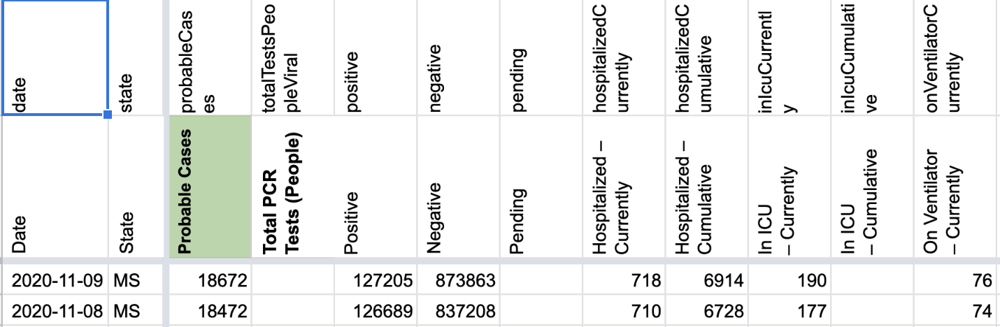
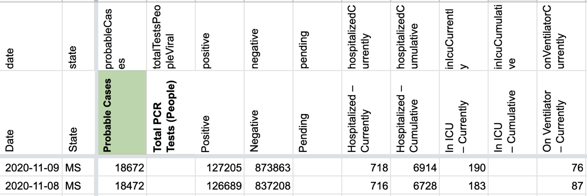

[MS] Patch 11/8 Cur. hosp, cur. icu, and cur. vent
Issue number 944
hmhoffman opened this issue on November 10, 2020 at 12:09 pm
State: MS
Dates affected: 11/8
Describe the issue: On 11/8, MS current hospitalization values updated after we checked the state. We need to backfill cur. hosp, cur. icu, and cur. vent using the hover over graph on their page (note: MS reports hospitalizations on a one day lag.
BEFORE: 
AFTER: 